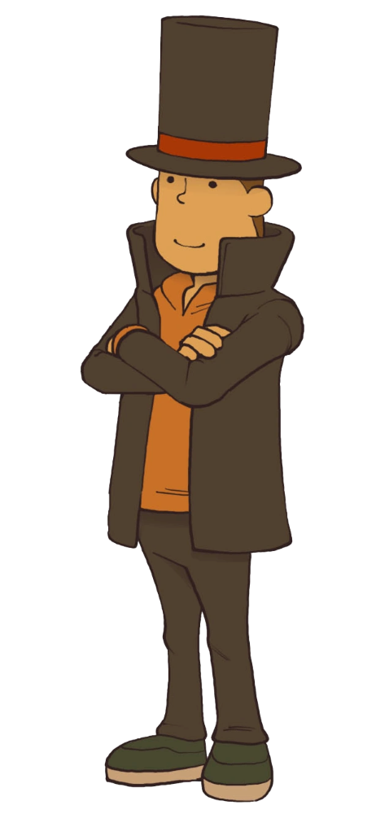
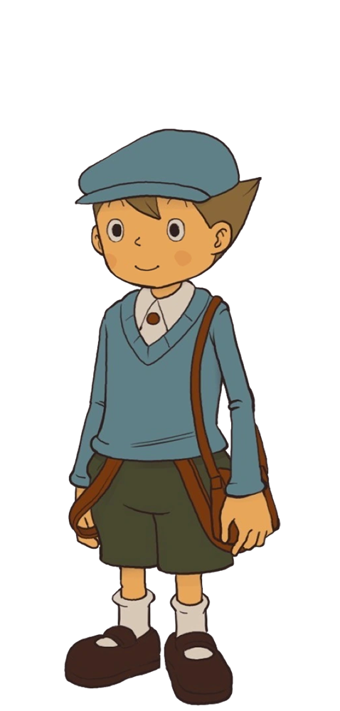
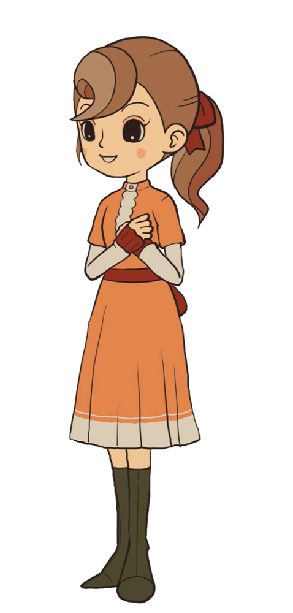
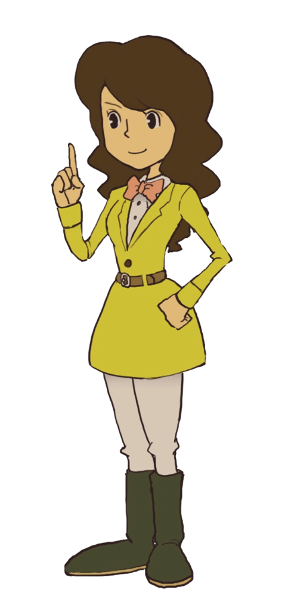
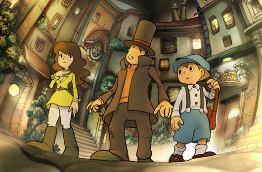
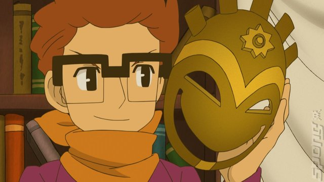
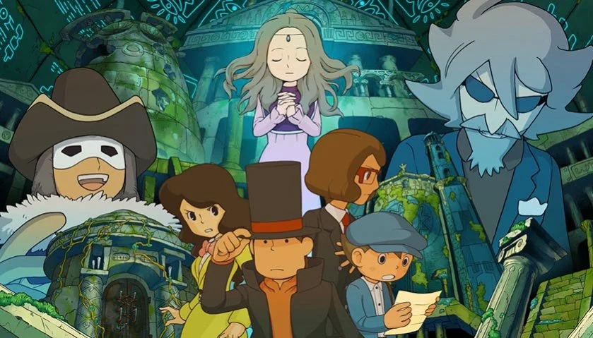
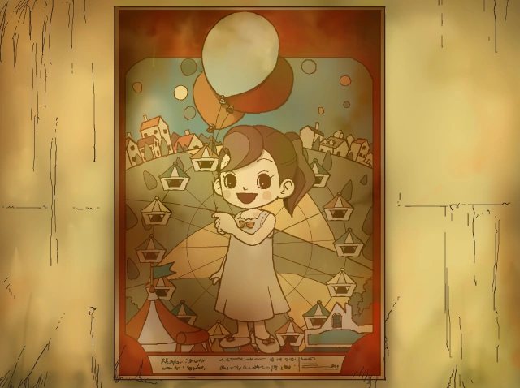
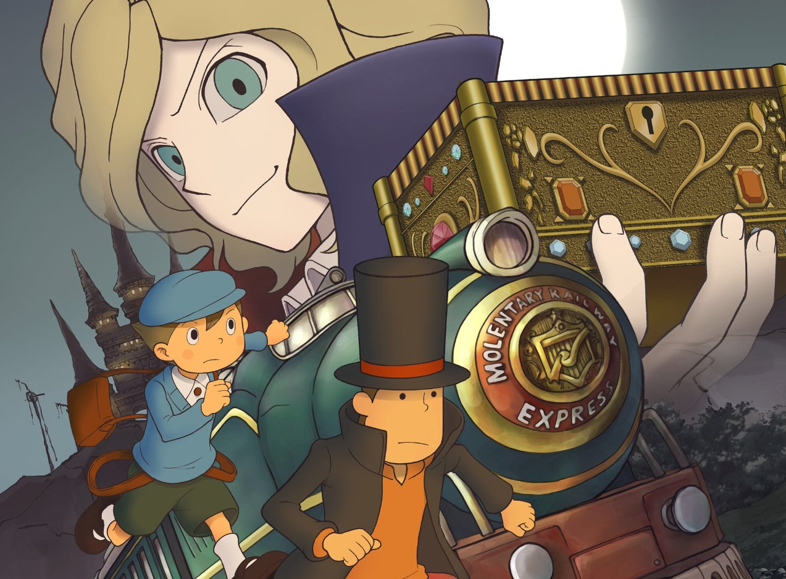
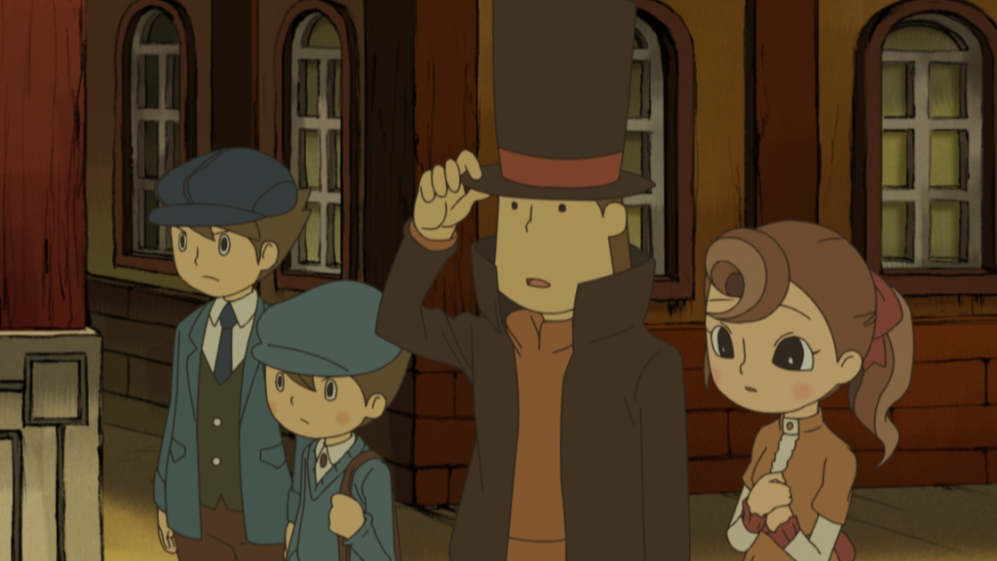

La saga Layton consta de una serie de videojuegos, OVAs y una película especial que relatan las aventuras del renombrado profesor de arqueología Hershel Layton. Él, con ayuda de su acompañante Luke Triton, resuelven diversos enigmas relacionados a aparentes sucesos paranormales. A lo largo de la historia se observa cómo ambos protagonistas logran desenmascarar historias relacionadas a ciudades fantásticas, sitios abandonados y objetos misteriosos.
El concepto original proviene de Akihiro Hino (director ejecutivo de la desarrolladora Level-5) buscando elaborar un videojuego similar a las entregas de Entrenamiento Mental de Akira Tago. Actualmente, la saga ha contado con más de 13.5 millones de ventas a nivel mundial.

Personaje principal de la saga, quien es maestro de arqueología en la universidad Gressenheller de Londres. Es altamente reconocido por su habilidad para resolver puzles, razón por la cual es llamado por distintos habitantes de la ciudad para encontrar respuesta a diversos misterios. Tiene dos hijos adoptivos: Alfendi y Katrielle Layton.

Es el deuteragonista de la saga de videojuegos, siendo el autoproclamado aprendiz del profesor. Su padre estudió con Hershel en la universidad, razón por la cual conoce a Luke desde niño en Misthallery (pueblo natal). Se observa a lo largo de la historia como un aprendiz joven que acompaña con un poco de humor varias escenas. Tiene la habilidad de hablar con los animales.

Acompañante del profesor y Luke durante la primera trilogía de la saga. Es presentada al final de la primera entrega, siendo la hija de los difuntos Barón Augustus y Lady Violet Renihold. Ella rodea parte principal de la historia de Saint-Mystère; sin embargo, en entregas posteriores adquiere el papel de tritagonista. Debido a su poco conocimiento del mundo exterior, se le dificulta entablar relaciones con otras personas.

Es tritagonista en la segunda trilogía de la saga. Hace su primera aparición como asistente del profesor en la universidad de Gressenheller, ayudándole a resolver los diversos misterios de dichas entregas. A lo largo de la saga se conoce que ella aprendió artes marciales y cuenta con un segundo trabajo como reportera. Debido a los giros de la tercera entrega, Emmy deja de ser asistente sin aparición en sucesos futuros.
La saga se divide en dos trilogías principales de videojuegos que recopilan la historia de los protagonistas. En la primera, se presentan a los personajes por medio de las aventuras en Saint-Mystère y el misterio de la Caja Elisea; mientras la tercera entrega establece un punto relevante en la historia de Luke y el Profesor Layton. La segunda trilogía es una precuela que comienza tres años antes de los sucesos del primer juego otorgando un mayor contexto sobre el origen de ambos protagonistas.
En la siguiente recapitulación se marcan algunos de los momentos más importantes de la historia de estas trilogías:

En la primera entrega en orden cronológico (el Profesor Layton y la Llamada del Espectro), se conoce el primer encuentro entre el profesor, Emmy y Luke, El profesor es llamado por el joven Luke para ayudar a resolver el misterio de la intensa niebla que azota al pueblo de Misthallery y la presencia de un ser espeluznante que llaman el Espectro. En este juego, se revela la subtrama de un villano conocido como Jean Descole, el cual busca enfrentarse al protagonista.
El profesor, Luke y Emmy tienen que enfrentarse a la leyenda de una máscara que concede deseos a su portador, el cual aterroriza a la ciudad de Monte d’Or convirtiendo a los habitantes en piedra. Allí, nuestro protagonista recordará los sucesos de su etapa universitaria que acabó con la desaparición de su amigo Randall, quien mencionaba tener dicha máscara en su poder 18 años anteriores a los sucesos del juego. Al final, se demuestra que todo el plan es una trampa ejecutada por Randall para vengarse, siguiendo las ordenes de Descole.


Finalizando la trilogía precuela de la saga (segunda trilogía en orden de lanzamiento), suceden los acontecimientos de El Legado de los Ashalanti, donde el profesor, con ayuda de un reconocido arqueólogo llamado Desmond Sycamore, descubren el misterio detrás de una “momia” denominada Aurora, quien parece conservar el legado de una antigua civilización. Sin embargo, son perseguidos por una organización armada conocida como Targent. Mientras los personajes buscan la manera de descubrir la verdad detrás del origen de Aurora y el pasado de la civilización Ashalanti, Targent frena a los protagonistas para quedarse con el poder que hay detrás de descubrir el legado.
En los diversos acontecimientos de esta última entrega, se revela que Descole es el hermano mayor de Layton, Hershel es hijo biológico de Leon Bronev (villano y creador de Targent) y Emmy fue una agente infiltrada para ayudar a Leon en el descubrimiento del legado Ashalanti. Emmy se despide de Layton y Luke al final de esta entrega, sin apariciones en futuros momentos de la saga.
Un año después del legado de los Ashalanti, ocurren los eventos de la Villa Misteriosa, donde Luke y el Profesor son llamados para resolver el enigma de la manzana dorada que el Baron Augustos deja como herencia. Dentro de los misterios que envuelven la entrega, se descubre que la villa de Saint-Mystère es en realidad un pueblo lleno de robots mandados a fabricar por el Baron luego de la muerte de su esposa, buscando que su hija, Flora, pudiera seguir viviendo en su lugar natal sin sentirse sola. Después de descubrir la herencia, Luke y el profesor deben escapar de los ataques del villano de esta trilogía: Don Paolo, quien se considera archienemigo del profesor por acontecimientos de hace 10 años.


Luego de los sucesos de la anterior entrega, Layton recibe la carta de su mentor, mencionando la existencia de una extraña Caja de Pandora que tiene en su poder: al visitarlo, el profesor se encuentra con la sorpresa de ver a su mentor muerto frente a la caja abierta. Por ello, decide ir acompañado de su aprendiz por medio de un viaje en tren que apuntaba al origen del enigmático objeto. Después de varias aventuras donde los personajes se reencuentran con Flora, son engañados nuevamente por Don Paolo y exploran el pueblo fantasma de Folsense, descubren la verdad detrás de la Caja Elísea.
El Profesor Layton y El Futuro Perdido marca los acontecimientos finales de ambas trilogías en orden cronológico. Allí, los protagonistas enfrentan los misterios relacionados a la demostración de una supuesta máquina del tiempo, que provoca la desaparición del primer ministro Bill Hawks. Los protagonistas paran en una tienda donde encuentran un reloj gigante que los lleva diez años al futuro, conociendo a Luke del futuro y a un grupo organizado de rufianes que menoscaba el orden en Londres. Sin embargo, se demuestra que todo fue una farsa planeada para vengar la muerte de varios involucrados en experimentos de viajes en el tiempo, donde fue afectada la antigua novia del profesor: Claire. Después de resolver el misterio, Luke se despide de Hershel al saber que debe mudarse a Estados Unidos con su familia. Un año después, Layton es llamado por su aprendiz para resolver el enigma de el Nuevo Mundo a Vapor (entrega próxima a publicarse).
